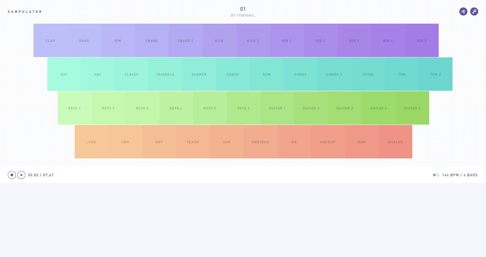
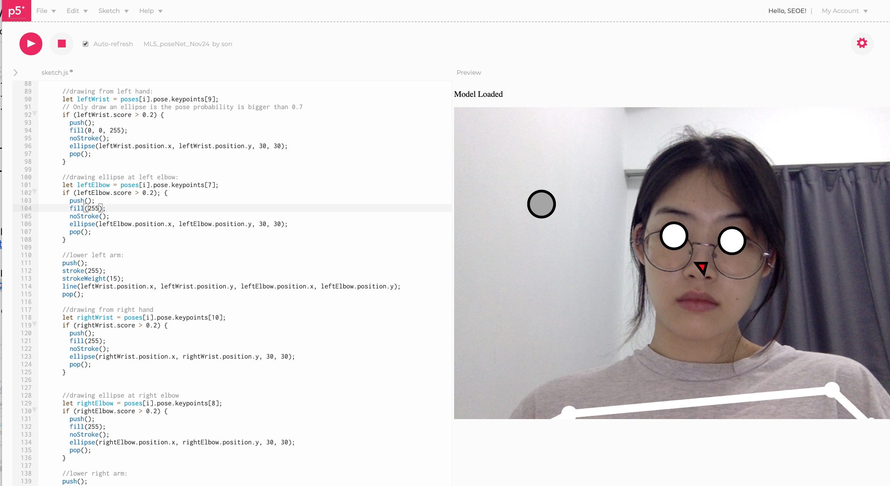
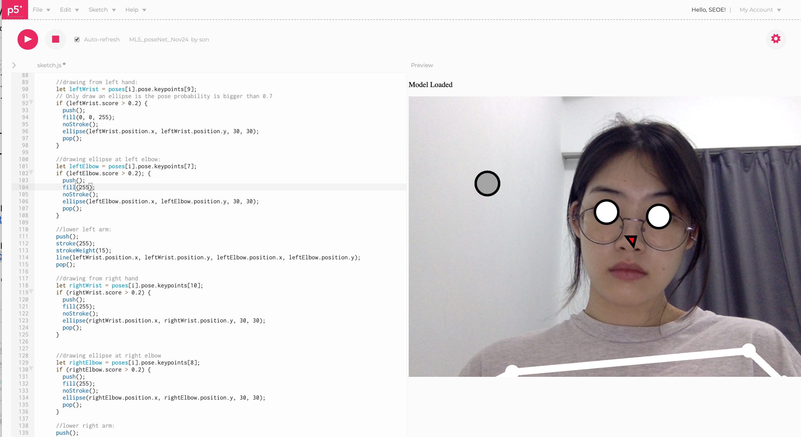
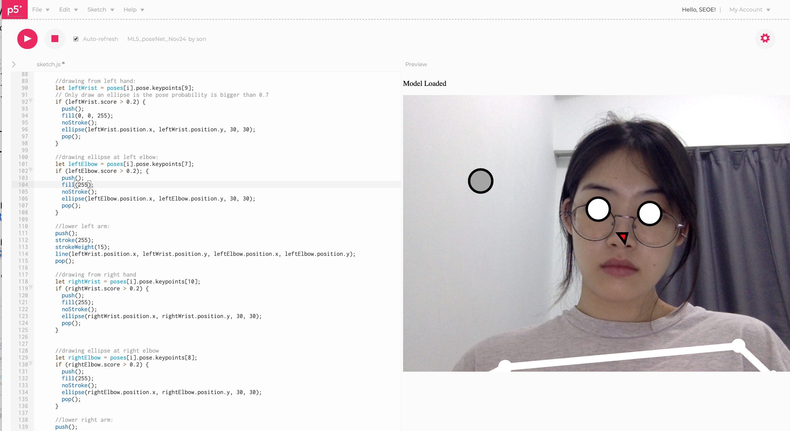

Proprioception is defined as the perception or awareness of the position and movement of the body, as well as the space around it. Also known as kinaesthesia, proprioceptive senses include balance, body position and spatial awareness.
Summary
This project tackles two interrelated ideas: ‘computation in design’ and ‘critical making’. Starting with simple applications, we engaged in ‘play’ that involves technologies. By experimenting existing codes and recreating the codes. My group developed a series of ‘design probes’through technological experiments and applications.
Artefact
Primary Research & Observations
OBSERVATION 01 — JACK: Observations at the Gym
Observations of possible human body
positions and ranges of movement through various
exercises at the gym provided insight into feasible input
mechanisms that involved physical motions of the
human body or bodies.
OBSERVATION 02 — SEOE: Interactions from Population
For my observations, I focused on interactions
within the public space (outside Plaza
Singapura, Dhoby Ghaut). I noticed trends
between the
interactions happening
in the common area
(e.g. walking, smoking).
The more interactions with people around the area, seemingly more LED flashings
would occur on the LED wall/screen of the building. This movement of population in the
space gave insight into possible outputs of an LED nature.
One possible study of relationships can be between the amount of human interactions
in a space and the movement of the population within the space. Hence, more
interaction (a floating population) = more movement of population in the space = more
output data.
OBSERVATION 03 — TOBY: Muscle and Spatial Memory
We often rely on our
eyes to gauge and determine the proximity of a
distance between us and an object. Our eyes
function as a measuring tool that aids us in our
mobility on a daily basis. For instance, we gauge
with our eyes, how far to reach our arms to push
a door. Likewise, we gauge with our eyes, how
far to step to avoid tripping over a bump in the
road. How reliant are we on our eyes?
With repeated motions, it is possible to be able to gauge objects without using our eyes.
Using the example of a keyboard, many are able to type sentences without looking
down at the screen or at their keyboard. This is due to the daily routine of using their
keyboard. Repeated motions result in muscle memory, that help us to navigate a
familiar spatial space.
How would humans perform in their ability to gauge spatial distance and proximity,
without their sight?
Would we able to approximate distances and quickly adapt to specific points in space
without our eyes?
During our preliminary research phase, we obtained information regarding various types of proprioceptive input mechanisms. We achieved this by firstly, conducting on-site research and observations at locations that feature lots of movement per our choosing and secondly, analysing case studies comprising related interactive artworks done in the past that deploy the movement of human bodies as an input mechanism.
Insights gained consist of input methodologies deploying spatial and muscle memory using repeated motions, existing installations in Singapore that deploy population-sized input, and possible body positions one may take while standing upright (and stationary): an arcing motion of the limbs, pushing a button, pulling a handle or lever, bending, squatting, stretching, twisting, turning and jumping. We also discovered the potential use of feet as sensors, or points of contact to the environment around (or beneath) us.
Case Studies
CASE STUDY 01 — Blooming Passage, Jewel
Velocity Induced Input (2 States)
Permanent Installation for the Canopy Mazes at Singapore’s Jewel Changi
Airport. “Blooming Passage” is permanently installed in the hedge maze of
Canopy Park, located on the top-most floor of the complex. The colorful,
motion-activated flowers react to passersby in the maze, offering a unique
experience that changes with time.
Yamaha artificial intelligence (AI) technology enabled a world-renowned dancer
Kaiji Moriyama to control a piano by his movements. The concert, held in Tokyo
on November 22, 2017, was entitled "Mai Hi Ten Yu"' and was sponsored by
Tokyo University of the Arts and Tokyo University of the Arts COI. Yamaha
provided an original system, which can translate human movements into musical
expression by using AI technology, as technical cooperation for the concert.
Click here for the video of Artificial Intelligence.
CASE STUDY 03 — The Pool, Jen Lewins
Population-Sized Input
The Pool is an interactive environment where movement creates swirling light
and color. Users play on concentric rings of circular pads that communicate with
each other wirelessly. As users shift their weight or move from one pad to
another, their motions are reflected first on their pad, than broadcast to the other
pads in the pool. As multiple users play in the pool, their interactions become
mesmerizing patterns of shifting and fading colors. The Pool is composed of 106
pads. Each pad is 3 feet in diameter and 6 inches tall. In plan, The Pool can span
anywhere between a 37-foot square (at a compressed scale) to a 75-foot square
(at an expanded scale).
Le mouvement de l'air, Adrien M & Claire B. Dance choreography performed in
the immersive environment of a moving cube, to explore the fleeting nature of
dreams and the fugacity of life.
“In Japanese, "Hakanai" means ‘impermanent, fragile, evanescent, transitory,
and fleeting’, somewhere between dream and reality. This symbolic association
is the starting point for a dancer who will face images revealing what lies on the
brink of imagination and reality.”
Two Different Velocity Types
1 - 2 States
Yes Movement
No Movement
2 - Variable States
Acceleration/ Speed of Movement
|--------------|
1 {scale} 100
The application of proprioception onto design through computational mediums presents an increased potential of interaction beyond audiovisual interfaces.
Initial Sketches
Case Studies 2
Case study based on secondary research of existing work that use physical motion and camera with different outputs.
Posnet
PoseNet is used to capture the location of your hands within the video. The location then gets converted to music.
musical sampler

Musical sampler that can be triggered in different ways. Users can use their mouse and keyboard or tracking points on body by turing on the webcam.
Execution from the case study
- Multi-positional Input through Posenet
- Multiple Invisible Shapes to Trigger Visuals and Audio
- Different instruments are played as well as different visuals
Audio and visual output will be played when users hover specific body parts over the trigger areas.
Experiments
Individual experiments

Using existing p5js, tried to Define the code how to trigger the audio or visual by touching the button and combining the two code.
Visual output experiment on here and audio output experiment here.
Developments
For the first draft of the project Proprioception, there were issues. Main issues are:
01. Awry pose detection, particularly
in the wrist
02. Unable to trigger sounds
03. Selection of sounds not suitable
04. Visuals are not very engaging
We convert our
code into 2 separate sketches, one
receiving and one broadcasting.
This helped to solve the huge lag
and the awry pose detection.
P5js of broadcast and receiving for the Posenet need to be in the seperate window under the same screen.
We had two different p5js for the final.
in black and white background different visual output with same audio output. Only or black version, we had background music. We decided to user testing for both.
Click here for the black version and here for the white version.
My group was too ambitious at the very first conceptualizing but managed to narrow down our idea. Our idea was the audience triggering the button as an input and sound and visual output together. I had done a lot of research on case studies to make the project more practical. The very first two p5js using PoseNet was our motivation to work on the sound output and visual output together. I tried combining two p5js examples which I found from the case study. Even though I had difficulties making the p5js to work, playing around with the p5js PoseNet was experimental and interesting. Rather than experimenting to make the p5js operate, I understood more easily when Andreas and my group mates gave me operable coding to look at. I was able to get feedback on my coding from their work and developments. Furthermore, I think it’s possible to make the Pump It Up game through the movements happening in square using PoseNet from p5js. Also, referring proprioception, detecting users walk flow in the public space when they pass the camera and make different sound output as they take each step. Working in groups for the artefact was great to get more deeper experimenting of p5js and experiencing existing p5js based on PoseNet. For future project, rather than understanding the existing coding that operates well, I would like to develop new project till end by myself next time.
Testing
We decided we wanted to conduct the user testing in public space. To evoke the feeling of play, community and togetherness. Before the actual user testing, we used oursevles as a test subject to experience the final two p5js in bigger screen. Result of p5js was good. Using big screen, projector as more fun and more engaging.
2 Scenarios
We choose to test two different p5js sketch in black and white background. We had 2 scenarios, for Scenario A, the user will try the sketch alone. For the Scenario B, the user will try the skecth with another user.
User testing required projector, bigger screen, large wide floor area or a public space. Unfortunately, due to the COVID-19 situation, we conducted our user testing at home with three different users.
User 01 — Leonard, Age 16
User 02 — Yujin, Age 23
User 03 — Shirley, Age 60
From the user testing, we found their preferences. Accordingly, we edited the sketch from the feedback. They preferred the larger trigger points using the white square. also, theys preferred the black background as it was easy to see the visual output. They found that white pulsating circles were better than squares as it was less messy and distracting. We did achieve our original aim of letting people “play” with music and visuals. All users said that they felt that it was a fun and dynamic experience. We also observed users trying to get out of their normal range of motion and challenging themselves to feel uncomfortable. Ultimately, we achieved our goal of enabling users to experience more physical movement, spatial awareness and proprioception.
The general consensus lies in the larger trigger points (square shapes big enough to touch and align with one another in a grid-manner) in the black version being easier to use and maneuver toward. The larger size of the squares mean that the trigger points are bigger, and hence easier to go to. In the white version, the circles were much smaller and tougher to trigger.
Although users chose the black version in terms of a friendlier user interface, they
all chose the white version in terms of the animated visuals that played in the background as it was less distracting and the line of circles looked like a music visualiser.
We did achieve our original aim of letting people “play” with music and visuals. All users said that they felt that it was a fun and dynamic experience. We also observed users trying to get out of their normal range of motion and challenging themselves to feel uncomfortable. Ultimately, we achieved our goal of enabling users to experience more physical movement, spatial awareness and proprioception.
Reflection
It was too bad that we weren’t able to test our project where we chose at the first place because of COVID-19. It would have been better if we were able to test in school public spaces (e.g. frass, student lounge). I tried best as possible to give more space for the users in different environments using different devices. Generally, feedbacks suggested from users came out as I expected. They gave feedback about the camera not detecting their body perfectly. They were frustrated how the movement needed to be slow and precise to be detected. They preferred experimenting together with their friends. They seem to have more fun and playful when they are using their feet and walking and jumping around in the bigger space and screen. Extending the user testing in the future, I want users size to be in actual size and in the same eye-level on the screen as in the real life. I want the project to be screened on the bigger screen using the projector or TV in the more open spaces. Users communicating with the project by interacting from proprioception (physical motion), PoseNet is an interactive vision model that was able to estimate the pose of a user from camera by estimating their key body joints. The more inputs there are the more outputs of sounds and visual users can get, it was well developed interactive project as my group intended.

 
